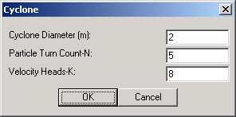
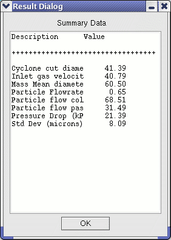

|  | Module specifications including Cyclone Diameter, Particle Turn Count and Velocity Heads. |
|  | Summary table entries include properties such as Particle Flowrate, percent Particle Flow Collected, percent Particle Flow Not Collected, Mass Mean Diameter, Particle Diameter Standard Deviation, module Pressure Drop, and the Cyclone Cut Diameter |